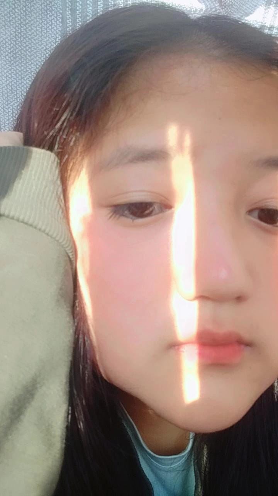

My dearest Yangzum, these past five days without you have felt like an eternity. Your absence has left a void in my heart that only you can fill. I've been counting down every second until we can be together again. I miss you so much, babe.
Yangzum, not having you by my side for these five days has made me realize just how much you mean to me. Every moment spent with you is precious, and I long for the warmth of your touch and the sound of your laughter. I can't wait to hold you in my arms once again.(virtually😢)
Babe, these five days have been tough, but the thought of you keeps me going. Your love and support have always been my strength, even when we're apart. I'm grateful for your presence in my life, and I'm counting down the moments until we can create more beautiful memories together.
Yangzum, being away from you for these five days has made me appreciate the little things we often take for granted. Your smile, your voice, your presence—I miss them all. I can't wait to see you and shower you with all the love and affection I've been holding in my heart.
My love, even though we're physically separated, our love knows no boundaries. It transcends distance and time. These five days have reminded me of the strength of our connection and the depth of our love. I am filled with anticipation to see you and be wrapped in your embrace once more.
Yangzum, every day without you has been a reminder of how lucky I am to have you in my life. Your love brings me joy, comfort, and inspiration. These five days have only made me realize how much brighter my world is with you in it. I'm counting down to the moment we're reunited.
Babe, the days may have felt long, but the love we share remains constant. As we navigate these five days of separation, remember that my heart is always with you. The distance only strengthens our love, making it more resilient and enduring. Soon, we'll be together again, and it will be magical.
Yangzum, being away from you for these five days has made me appreciate the little things that make our relationship special. From late-night conversations to silly inside jokes, our bond is filled with love and laughter. I can't wait to share more beautiful moments with you when we're reunited.
My love, as the days pass by, my heart yearns for your presence. These five days have been a test of patience and longing, but they've also reinforced the depth of my feelings for you. I am reminded of the strength of our love and the joy you bring to my life. I'm eagerly waiting for our reunion.
Babe, distance may keep us apart for now, but it can't dampen the fire that burns within us. These five days have made me realize that our love is resilient, and it can withstand any challenge. I'm grateful for your love, and I'm excited to create more beautiful memories together very soon.